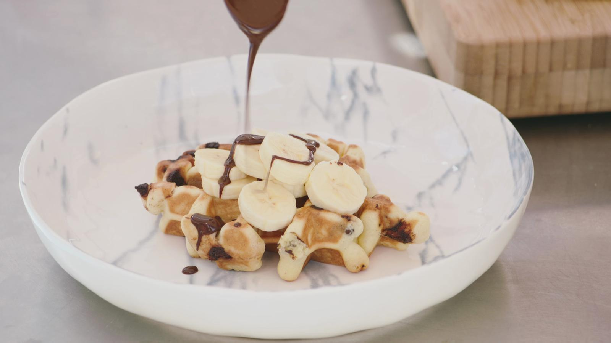

Chocolade wafeltjes met banaan
Ingrediënten
- Chinese hot and sour soep
- chocolade wafeltjes met banaan
- Rode poon met puree van wortelen

Ingrediënten
- boter 400 g
- kristalsuiker 300 g
- bloem 500 g
- zout bakpoeder
- ½ koffielepel
- eieren 6
- vanillestokje 1
- chocolate chips 200 g
- melk (of room) een scheutje
- banaan 1
Bereiding
- 400 g boter Smelt de boter in een pannetje op een laag vuur. Het is niet de bedoeling dat de boter kleurt, dus hou dit in de gaten.
- 300 g kristalsuiker500 g bloemzout Doe de bloem, de suiker en een snuif zout in de kom van de keukenmachine. Laat draaien op lage snelheid tot alles goed gemengd is.
- ½ koffielepel bakpoeder Giet er langzaam de gesmolten boter bij. Voeg ook het bakpoeder toe en kneed in de keukenmachine.
- 6 eieren Breek de eieren een voor een in de kom. Laat de machine draaien tot je het perfecte wafelbeslag krijgt.
- 1 vanillestokje Snijd de vanillestok overlangs en schraap uit elke helft de vanillezaadjes. Doe deze bij het mengsel.
- 100 g chocolate chips Voeg ook de chocolade chips toe en laat de machine verder draaien.
- Laat het beslag minstens een uur afkoelen in de koelkast.
- Verwarm het wafelijzer op de hoogste stand.
- Haal het beslag uit de koelkast en schep er met een eetlepel een stevige bal uit.
- Leg de bal beslag in het wafelijzer en bak tot een goudbruine wafel. Gebruik een (prik)vork om de wafel uit het ijzer te halen. Ga door tot het beslag op is.
- een scheutje melk (of room)100 g chocolate chips Zet een steelpannetje op een zacht vuur met een bodem melk. Voeg wat chocolate chips toe en roer ze met een garde door de melk tot de chocolade weggesmolten is.
- 1 banaan Snijd de banaan in plakjes.
Laat de wafels even afkoelen en serveer ze met schijfjes banaan en chocoladesaus bovenop.